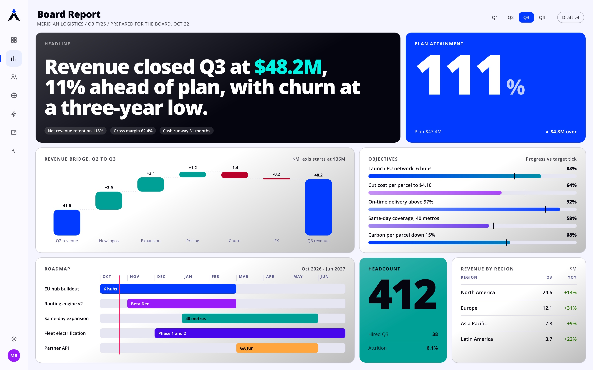
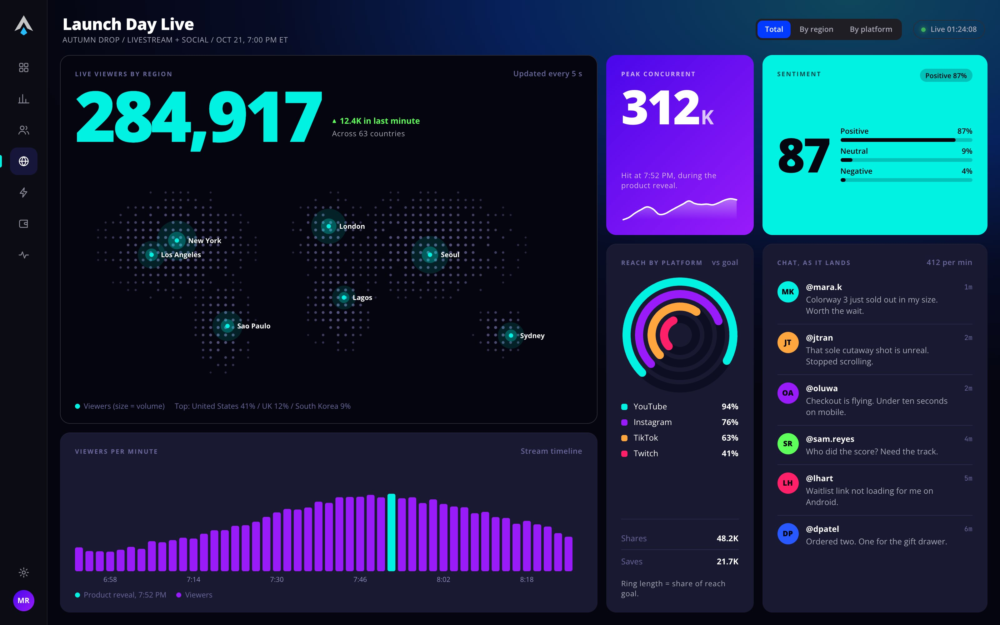
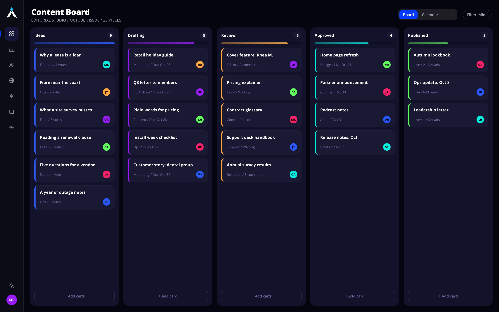
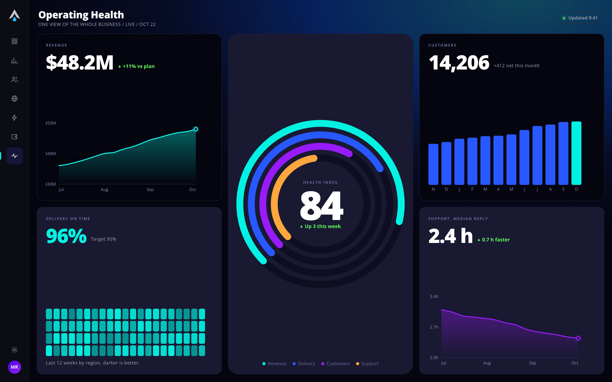
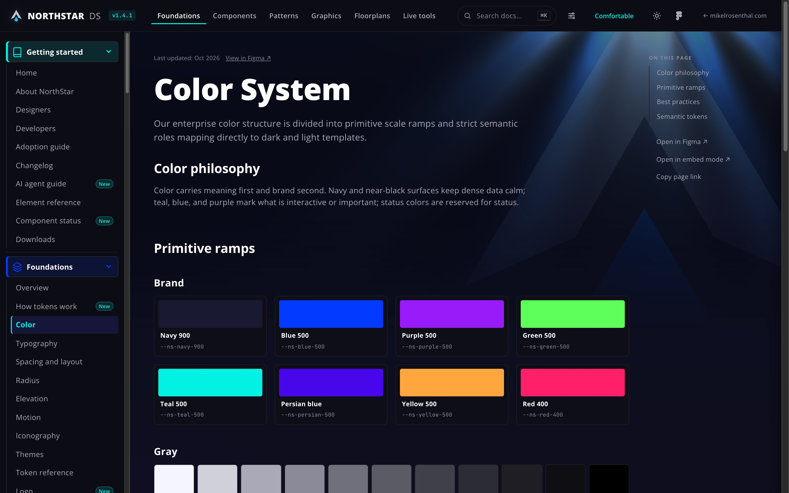
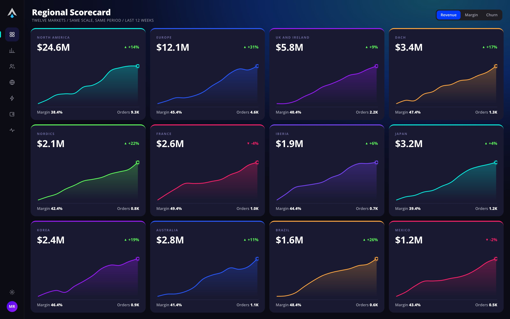

NORTHSTAR DS
A design system for enterprise consoles, live in a working portal and governed from Figma variables to full dashboards.
Tokens, components, screens. One linked system.
ScrollNorthStar is a design system and live portal for data-heavy enterprise products: tokens, components and a Figma library, linked in both directions and proven on 24 dashboard layouts.
The tokens have two tiers: raw values, then named roles that switch between dark, light and high contrast. Density and motion have their own modes. One component catalog builds every component page, so the guidance always comes from a single source. Every component links to its Figma source, and Figma links back. Automated checks run before each release. They catch token drift, broken links, accessibility failures and visual changes.
The portal is built for AI agents too. It publishes the rules, components and tokens as files an agent can read, and a validator checks what the agent builds against the system. The Live Builder assembles UI on screen from real components and shows each step as it runs. With an API key, Claude generates new UI from the same tokens and components.
One set of tokens, proven on real screens.
Component pages show that a button exists. They do not show whether the tokens hold up when a screen carries charts, tables, status and dense copy at once.
So the brief for NorthStar went past the library. One set of tokens had to cover the components, the docs and a full range of data-heavy screens, in dark and light.
Figma and live code, built as one linked system.
Follow one role from the Figma variable to a shipped screen. Switch the mode, or break a link and run the check.
- 01Figma variable
widget/bgDark
#191932Light#FFFFFF - 02Token
:root { --ns-widget-bg: #191932; } - 03Component Button, Figma node 4038:31741
- 04Screen
Dashboard film, dark

$ figma-sync-check --offline NorthStar drift check (offline: site side only) Site components: 57 | Spec tabs: 58 No drift found.The break is simulated on this page. The real check reads the Figma file.
- Source
- Figma Variables hold the primitives and semantic roles. Dark, light and high contrast are modes of the same roles. Density and motion have their own modes.
- Links
- Every docs component carries its Figma node ID, and each Figma component links back to its docs page.
- Specs
- Spec tabs are generated from the Figma specification frames, so the numbers are not retyped.
- Drift
- A sync check reports broken links, missing nodes and specs without a tab. It fails when the two sides disagree.
- Code first
- A new component can ship to the docs marked "Waiting for Figma sync", then sync in a batch.
Every chart color, measured and tuned for contrast.
The dashboards pulled charts from several sources: the chart kit, two generations of widgets and a bullet chart. The same blue differed between them, half carried gradients, and gridlines came in two styles.
An audit moved all of them to one source of chart style, with flat fills from tokens. It also caught contrast failures on the dark widget surface, measured here against the real values.
Wireframe to screen.
Move across the frame. Each wireframe is measured from the finished page, so it matches the screen tile for tile.
Eight layouts cover common reporting jobs. Six follow one record through five stages, with the same stepper and rail on every screen.
Ten more break the equal-card grid on purpose: editorial, radial, board, flow and calendar. Two layouts run in the light theme.





Live, linked and checked on every release.
$ figma-sync-check --offline NorthStar drift check (offline: site side only) Site components: 57 | Spec tabs: 58 No drift found.
What it shows
One person can keep a Figma library, tokens, docs and full screens in step, with a check that reports when they drift apart.
What it does not show
No product team has adopted NorthStar, so there are no adoption or delivery numbers. Those are intended outcomes, not results.